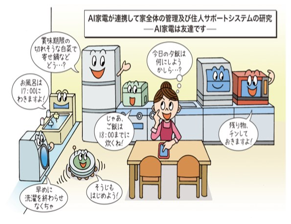

神奈川工科大学
杉村研究室
IoT Programming Lab
|  | 杉村研究室では「人間が直接機械を操作せずに安心で快適な暮らしをする」というテーマのもと、 家電をネットワークにつなぎ、住人のサポートを行うシステムを研究しています。 また、日本のスマートハウス対応インターネット家電のほとんどはこのプロトコルで遠隔操作できるため、 ECHONET Liteのプログラミング教育に力を入れています。 IoTミニチュアハウスは杉村研究室と、ものづくりサークル「Life Hackers」の強力で開発しました。 |